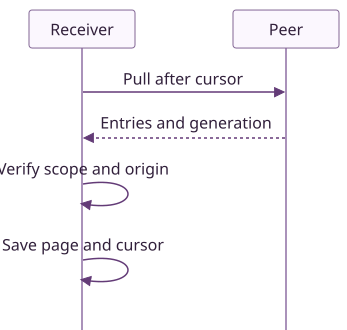

Trust between Homes
Two Homes can share a community while keeping independent membership and moderation policies.
Pulling the next page
The receiving Home asks a permitted peer for entries after its saved cursor. It validates the origin and signatures, then commits the accepted records and cursor together. Retrying an already imported event ID keeps one copy.

Permission follows the community
The serving Home authenticates the remote endpoint and limits its response to authorized communities. An importer also checks whether it trusts the originating Home for each community. Trusting an intermediary alone cannot admit a third Home’s publications. Explicit grants or verified public-group host permits establish the relevant scope.
Catching up after a restart
A page reports a generation, entries, next cursor and whether more pages remain. A cursor is local to the serving Home. A new generation or changed authorization scope can trigger a rescan. Pages scan at most 100 log rows. Invalid signatures or out-of-scope entries prevent the page and cursor from committing.
Peering policy and moderation
An operator can require a signed covenant acceptance and explicit community approval. The checked-in public Home policy closes outside admission. A Home skips valid records from locally blocked origins. Suspension can preserve the route for previously shared deletions while withholding new content. Each receiving Home also applies its own hides.
What a deletion proves
A version-4 post commits to its content and a random salt. The device signs the event ID and the Home signs acceptance. A valid owner deletion replaces the content and salt with a verifiable header and signed deletion proof. A newly syncing peer can verify the deletion without seeing the old text. Replaying an earlier live event cannot restore a deletion the Home already knows.